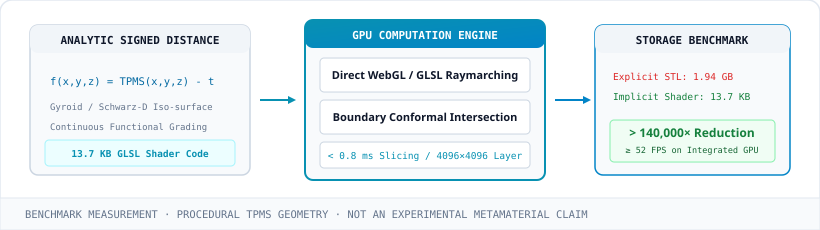

Demonstrated Implementations & Computational Systems
Detailed technical entries answering: "What has she actually built?" Each dossier outlines the governing physical formulation, architectural pipeline, verification suites, quantitative benchmarks, and open reproducible code.
First-Author Research Manuscript · Atmospheric Transport
AetherCast: Physics-Informed Fourier Neural Operators for Localized 2D Transport Nowcasting
Under Review · AI4Science Workshop at NeurIPS 2026
Research Question:
How can finite-difference PDE residuals be incorporated directly into Fourier Neural Operator training to constrain physical consistency and reduce unphysical dissipation in multi-step transport forecasting?
Why It Matters
Purely data-driven neural operators often accumulate non-physical drift, numerical dispersion, and mass dissipation over long autoregressive rollout horizons. Embedding discrete PDE residuals acts as a continuous inductive bias, enforcing transport physics without demanding massive labeled simulation corpora.
What I Built
Designed and implemented a compact 2D PI-FNO pipeline (106,264 trainable parameters) that forecasts 24 future time steps (120-minute horizon) on a 32 × 32 spatial mesh. Integrated a finite-difference spatial operator into the loss function, and verified the model against an explicit discrete reference solver using fixed-seed evaluation.
∂u/∂t + v_x (∂u/∂x) + v_y (∂u/∂y) = D (∂²u/∂x² + ∂²u/∂y²) - λ u
The composite loss function balances data discrepancy against governing physics:
ℒ_total = ℒ_data(u_pred, u_ref) + λ_phy · ‖ ∂u_pred/∂t + v·∇u_pred - D∇²u_pred + λ u_pred ‖²_FD
79.4%
MSE reduction scaling from 64 to 1024 trajectories
52.1%
Relative L₂ error reduction across data scaling
36.1%
PDE residual reduction at λ_phy = 0.01 (2.7% MSE delta)
39.5%
Lower PDE residual vs unregularized FNO at 1k samples
Double-Blind Review & Scope Disclosure: The manuscript is currently under double-blind review at the AI4Science Track Workshop at NeurIPS 2026; co-authors are omitted to preserve anonymity. AetherCast is formulated as a scientific prototype evaluating physics-regularized operator learning; CPU measurements do not claim a speed advantage over the discrete reference solver at this resolution.
Can decoupled coordinate neural networks with physics-informed priors simultaneously identify spatial wear coefficients, predict moving surface recession, and reconstruct subsurface elastic stress fields from sparse surface profilometry?
The Mechanics Challenge
Micro-milling tool wear and mechanical contacts exhibit tightly coupled surface-subsurface phenomena: progressive abrasive wear alters contact pressure distributions, which dynamically reshapes the internal elastic stress field. Traditional FEM remeshing is computationally expensive; pure regression fails to satisfy biharmonic stress equilibrium.
What I Built
Engineered a dual-network PINN using independent coordinate networks equipped with Random Fourier Feature (RFF) embeddings. Integrated an Archard wear evolution rate with a 2D elastic half-space Airy stress potential (\(\nabla^4 \Phi = 0\)). Used quasi-Monte Carlo Sobol collocation and SoftAdapt dynamic multi-loss balancing, trained via two-stage AdamW + L-BFGS.
Real-time joint-torque prediction and anatomical visualization in pathological pediatric gait through learned operator mappings coupled with biomechanical constraints.
✓ IMPLEMENTED & WORKING
Working PINN-based predictive model for joint-torque dynamics.
Functional digital-twin 3D kinematics visualization rendered.
Rigorous comparison against gold-standard laboratory optical motion capture & force plates.
No claim of clinical efficacy or medical diagnostic deployment.
The project addresses the computational latency of inverse-dynamics algorithms in clinical gait analysis. By mapping kinematic sensor streams directly to joint torques via a physics-constrained neural operator, the architecture aims to bring continuous gait monitoring closer to real-time execution while preserving joint-moment equilibrium.
How can coupled Navier-Stokes fluid flow and advection-diffusion thermal transport be formulated into a unified, sparse GPU memory pipeline for fast SIMP topology optimization without dense matrix bottlenecks?
Multiphysics Governing Equations
Couples a penalized Navier-Stokes/Darcy Brinkman flow model with an advection-diffusion energy equation in a finite-volume discretization:
-∇p + μ∇²u - α(γ)u = 0 | ρ C_p (u · ∇T) = ∇ · (k(γ)∇T)
CUDA Engineering & GPU Pipeline
Engineered flattened Unified Memory buffers to streamline host-device communication, device-side ghost-cell boundary evaluation, and cuSPARSE BiCGStab for linear system solves. Applied first-order upwind discretization for numerical stability in high-Péclet regimes without forming dense \(N \times N\) operators.
Investigating compact mathematical representations of triply periodic minimal surfaces (TPMS) and functionally graded micro-lattices, bridging computational geometry with architected material design.
Framing & Boundary: This project represents demonstrated experience in computational geometry, implicit representations, and GPU evaluation. It is not an experimental wet-lab metamaterials study. All numbers below represent verified benchmark measurements from reproducible test environments.
> 140,000×
Measured storage reduction (13.7 KB shader vs 1.94 GB STL)
≥ 52 FPS
10⁶-cell TPMS rendering at 1080p on integrated GPU
168–580 FPS
Benchmark range evaluated on discrete GPUs
< 0.8 ms
Reported slicing time per 4096 × 4096 layer

The framework replaces gigabyte-scale explicit triangular meshes with analytic Signed Distance Field equations evaluated on demand on the GPU. It supports procedural Gyroid and Schwarz-D primitives, spatial density grading, boundary conformal intersection with arbitrary solid CAD boundaries, and exportable marching-cubes STL reconstruction for additive manufacturing.
Combines object detection (YOLOv5) and multi-object tracking (SORT) with continuum velocity fields to model high-density pedestrian dynamics. Computes vector-flux divergence and density gradients across spatial grid zones to identify crush-risk bottlenecks and localized trample origins before catastrophic crowd surges occur.